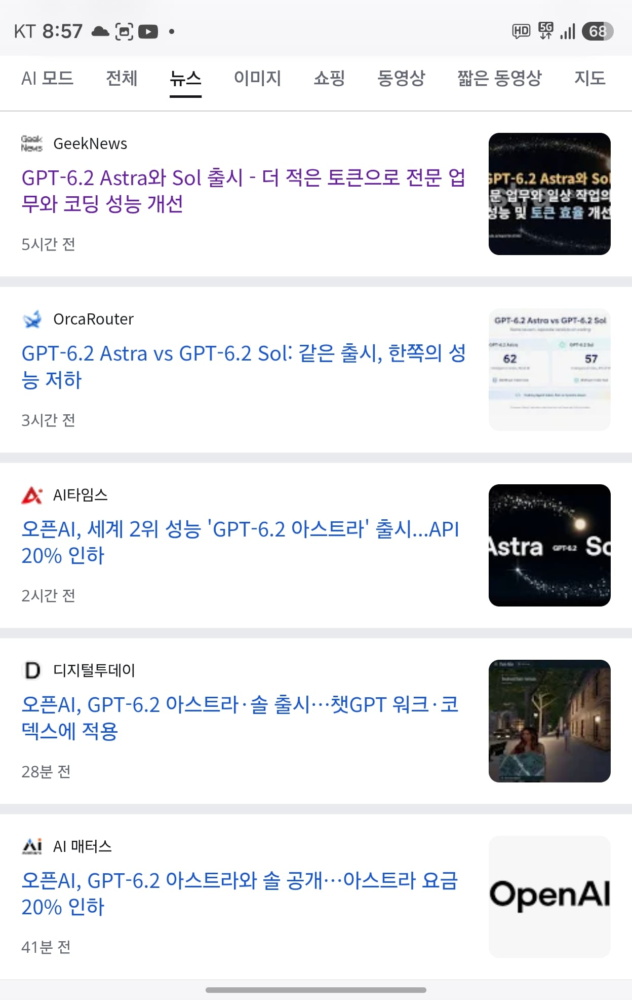

그렇데요

그렇데요
이번에도 고지능자폐...
사후 조정이라도 더 하고 내지 왜 낸걸까
앤트로픽 상장한다니까 꼬랑지에 불붙은거지
취미용이라서 체감은 젬황이 제일 좋은듯. 젬이랑 같이 초고작성 -> 지피에게 퇴고 -> 이새끼 뭔소리한겨? 하고 젬한테 easy read 요청 -> 알잘딱깔센으로 설명해줌 -> ㅇㅎ 좋아 최종퇴고 클로드에게 부탁해보자 -> 결과물 나옴
근데 지피티이미지 2.6은 존나 좋긴 함. 젖보똥 다보여줌
결론은 초안작업은 잡ai시키고 결과물은 대황갓클로드한테 받는다는거네
그냥 제일 깐깐해서 마지막에 한번 던져주면 이것저것 평가해주거든
지피티 이미지 2.6이요???
오 초기화권 뿌려주려나
자폐 모델이라고 하는데 이게 어떤 뜻이에요???
자문 자답해봅니당
1. 사용자가 절대로 알수없는 내부 세부사항들에 대해 물어보려고 작업을 정지한다
2. 뭔가 모든 설명을 못알아 쳐먹도록 한다
3. 장기작업 시 쓸데없는 디테일에 골몰해서 작업을 진척시키질 못한다
자폐처럼 명령하면 잘해줌
근데 사고확장이 안돼서 스킬 다시 달아주는중